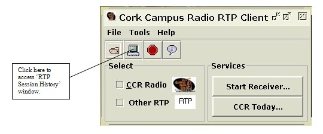

Introduction
Features
Listen to CCR!
Listen to User Specified RTP
View CCR Schedule
RTP Session History
CCR 'Media Player'
Requirements
About CCR, More Info
RTP Session History

The 'RTP Session History' utility (fig. 3.1), keeps track of the of the RTP parameters that a user may of used during one session using the 'Cork Campus Radio RTP Client'. This utility creates a list of the parameters of the different RTP streams that a user may have initiated during one session of use of the client. When an item on this list is clicked on it places these paramters in text fields of the 'RTP Session' window. Thus the user does not have to re-enter the same paramters. This is particularly useful for those who may be using the 'Cork Campus RTP Client' as a test environment while working with RTP streams.

Figure 3.1: 'RTP Session History' window.
To access the 'Cork Campus Radio RTP Client' 'RTP Session History' window, click on the assigned tool bar button (fig: 3.2) or on the menu item in the 'Tools' menu, both of which are on the main application window.
To remove an item from the list you highlight the desired RTP address parameters on the list and click the 'Remove Target' button.
To place the RTP address parameters in the the 'RTP Session' window text fields, double click on the desired RTP address parameters on the list.

Figure 3.2: Opening 'RTP Session History' window.